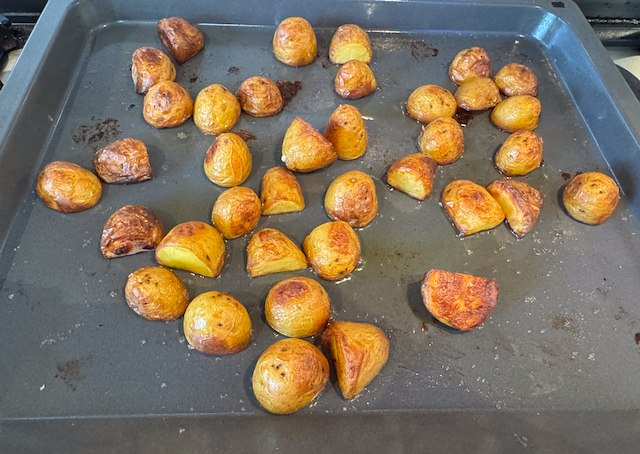
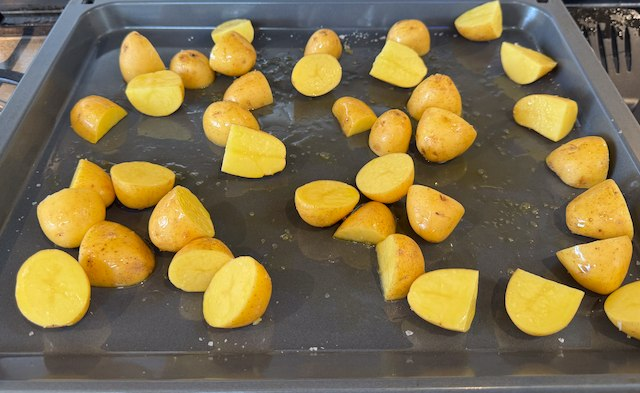

Mini Roasties

Serves: 4
Cook Time: 1 hour
This is a slightly quicker version of roast potatoes, made with new potatoes and without the need to par boil.
Ingredients
- 1kg new potatoes
- olive oil
- salt
Method
Preheat the oven to 200°C fan.
Cut the potatoes in half, and place on roasting tray. Drizzle with olive oil, scatter with salt, and mix around.
Cook in the oven for 45 min.
Flip the potatoes around after about 20 min, and again near the end.
